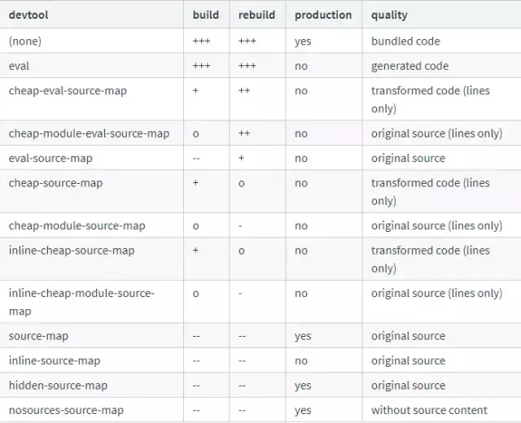
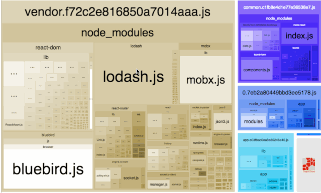

Vue项目性能优化方案
前言
Vue框架通过数据双向绑定和虚拟DOM技术，帮我们处理了前端开发中最脏最累的DOM操作部分，我们不在需要去考虑如何操作DOM以及如何最高效地操作DOM；但Vue项目中仍然存在项目首屏优化、Webpack编译配置优化等问题，所以我们仍然需要去关注Vue项目性能方面的优化，使项目具有更高效的性能、更好的用户体验。本文是通过实际项目的优化实践进行总结而来，希望读完之后，有一点的启发思考，从而对自己的项目进行优化起到帮助。本文内容分为以下三部分组成：
Vue代码层面的优化；
webpack配置层面的优化；
基础的web技术层面的优化。
代码层面的优化
v-if和v-show区分使用场景
v-if是真正的条件渲染，因为它会确保在切换过程中条件块内的事件监听器和子组件适当地被销毁和重建；也是惰性的：如果再初始渲染时条件为假，则什么也不会做—-直到条件第一次变为真时，才会开始渲染条件块。v-show就简单得多，不管初始条件是什么，元素总是会被渲染，并且只是简单地基于CSS的display属性进行切换。
所以，v-if适用于在运行时很少改变条件，不需要频繁切换条件的场景；
v-show则适用于需要非常频繁切换条件的场景。
computed和watch区分使用场景
computed：是计算属性，依赖其它属性值，并且computed的值有缓存，只有它依赖的属性值发生改变，下一次获取computed的值时才会重新计算computed的值；watch：更多的是【观察】的作用，类似于某些数据的监听回调，每当监听的数据变化是都会执行回调进行后续操作；
运用场景：
当我们需要进行数值计算，并且依赖于其他数据时，应该使用computed，因此可以利用computed的缓存特性，避免每次获取值时，都要重新计算；
当我们需要在数据变化是执行异步或开销比较大的操作时，应该使用watch，使用watch选项允许我们执行异步操作（访问一个API），限制我们执行该操作的频率，并在我们得到最终结果前，设置中间状态。这些都是计算属性无法做到的。
v-for遍历必须为item添加key，且避免同时使用v-if
(1) v-for遍历必须为item添加key
在列表数据进行遍历渲染时，需要为每一项item设置唯一key值，方便Vue.js内部机制精准找到该条列表数据。当state更新时，新的状态值和旧的状态值对比，较快地定位到diff.
(2) v-for 遍历避免同时使用v-if
v-for比v-if优先级高，如果每一次都需要遍历整个数组，将会影响速度，尤其是当需要渲染很小一部分的时候，必要情况下应该替换为computed属性。
推荐：
1 | <ul> |
不推荐：
长列表性能优化
Vue会通过Object.defineProperty对数据进行劫持，来实现视图相应数据的变化，然而有些时候我们的组件就是纯粹的数据展示，不会有任何改变，我们就不需要Vue来劫持我们的数据，在大量数据展示的情况下，这能够很明显的减少组件初始化的时间，那如何禁止Vue劫持我们的数据呢？可以通过Object.freeze方法来冻结一个对象，一旦被冻结的对象就再也不能被修改了。
1 | export default { |
事件的销毁
Vue组件销毁时，会自动清理它与其它实例的连接，解绑它的全部指令及事件监听器，但是仅限于组件本身的事件。如果在js内：
1 | created() { |
图片资源懒加载
对于图片过多的页面，为了加速页面加载速度，所以很多时候我们需要将页面内未出现在可视区域内的图片先不做加载，等到滚动到可视区域后再去加载。这样对于页面加载性能上会有很大的提升，也提高了用户体验。我们在项目中使用Vue的vue-lazyload插件:
（1）安装插件
1 | npm install vue-lazyload --save-dev |
（2）在入口文件main.js中引入并使用
1 | import VueLazyload from 'vue-lazyload' |
然后在vue中直接使用
1 | Vue.use(VueLazyload) |
或者添加自定义选项
1 | Vue.use(VueLazyload, { |
(3) 在vue文件中将img标签的src属性直接改为v-lazy，从而将图片显示方式更改为懒加载显示：
1 | <img v-lazy="/static/img/1.png"> |
以上为vue-lazyload插件的简单使用，如果要看插件的更多参数选项，可以查看vue-lazyload的GitHub地址。
路由懒加载
Vue是单页面应用，可能会有很多的路由引入，这样使用webpack打包后的文件很大，当进入首页是，加载的资源过多，页面会出现白屏的情况，不利于用户体验。如果我们能把不同路由对应的组件分割成不同的代码块，然后当路由被访问的时候才加载对应的组件，这样就更加高效了。这样会大大提高首屏显示的速度，但是可能其他的页面的速度就会降下来。
路由懒加载：
1 | const Foo = () => import('./Foo.vue') |
第三方插件的按需引入
我们在项目中经常会需要引入第三方插件，如果我们直接引入整个插件，会导致项目的体积太大，我们可以借助babel-plugin-compontent，然后可以只引入需要的组件，以达到减小项目体积的目的。以下为项目中引入element-ui组件库为例：
（1）首先，安装babel-plugin-component；
1 | npm install babel-plugin-component -D |
(2) 然后，将.babelrc修改为：
1 | { |
（3）在main.js中引入部分组件:
1 | import Vue from 'vue'; |
优化无限列表性能
如果你的应用存在非常长或者无限滚动的列表，那么需要采用窗口话的技术来优化性能，只需要渲染少部分区域的内容，减少重新渲染组件和创建dom节点的时间。你可以参考下开源项目vue-virtual-scroll-list和vue-virtual-scroller来优化这种无限列表的场景的。
服务端渲染SSR or 预渲染
服务端渲染是指Vue在客户端将标签渲染成的整个HTML片段的工作在服务端完成，服务端形成的HTML片段直接返回给客户端这个过程就叫做服务端渲染。
（1）服务端渲染的优点：
更好的SEO：因为SPA页面的内容是通过Ajax获取，而搜索引擎爬取工具并不会等待Ajax异步完成后再抓取页面内容，所以在SPA中是抓取不到页面通过Ajax获取到的内容；
而SSR是直接有服务端返回已经渲染好的页面（数据已经包含在页面中），所以搜索引擎爬取工具可以抓取渲染好的页面；
更快的内容到达时间（首屏加载更快）：SPA会等待所有Vue编译后的js文件都下载完成后，才开始进行页面的渲染，文件下载等需要一定的时间等，所以首屏渲染需要一定的时间；
SSR直接由服务端渲染好页面直接返回显示，无需等待下载js文件及再去渲染等，所以SSR有更快的内容到达时间；
（2）服务端渲染的缺点：
更多的开发条件限制：例如服务端渲染只支持beforeCreate和created两个钩子函数，这回导致一些外部扩展库需要特殊处理，才能在服务端渲染应用程序中运行；并且与可以部署在任何静态文件服务器上的完全静态单页面应用程序SPA不同，服务端渲染应用程序，需要处于Node.js server 运行环境；
更多的服务器负载：在Node.js中渲染完整的应用程序，显然会比仅仅提供静态文件的server更加大量占用CPU资源，因此如果你预料在高流量环境下使用，请准备相应的服务器负载，并明智的采用缓存战略。
如果你的项目的SEO和首屏渲染是评价项目的关键指标，那么你的项目就需要服务端渲染来帮助你实现最佳的初始加载性能和SEO,具体的Vue SSR如何实现，可以参考作者的另一篇文章《Vue SSR踩坑之旅》。如果你的Vue项目只需改善少数营销页面（例如/,/about,/contact等）的SEO，那么你可能需要预渲染，在构建时（build time）简单的生成针对特定路由的静态HTML文件。优点是设置预渲染更简单，并可以将你的前端作为一个完全静态的站点，具体你可以使用prerender-spa-plugin就可以轻松添加预渲染。
https://blog.csdn.net/xustart7720/article/details/79960591[web前端性能&SEO优化]
Webpack层面的优化
Webpack对图片进行压缩
在Vue项目中除了可以在webpack.base.conf.js中url-loader中设置limit大小来对图片处理，对小于limit的图片转为base64格式，其余的不做操作。所以对有些较大的图片资源，在请求资源的时候，加载会很慢，我们可以用image-webpack-loader来压缩图片：
（1）首先，安装image-webpack-loader:
1 | npm install image-webpack-loader --save-dev |
(2) 然后，在webpack.base.conf.js中进行配置：
1 | { |
减少ES6转为ES5的亢余代码
Babel插件会在将ES6代码转换为ES5代码时会注入一下辅助函数，例如下面的ES6代码：
1 | class HelloWebpack extends Component{...} |
这段代码再被转换成能正常运行的ES5代码时需要以下两个辅助函数：
1 | babel-runtime/helpers/createClass // 用于实现 class 语法 |
在默认情况下，Babel会在每个输出文件中内嵌这些依赖的辅助函数代码，如果多个源代码文件都依赖这些辅助函数，那么这些辅助函数的代码将会出现很多次，造成代码亢余。为了不让这些辅助函数的代码重复出现，可以在依赖它们是通过require('babel-runtime/helpers/createClass)的方式导入，这样就能做到只让它们出现一次。babel-plugin-transform-runtime插件就是用来实现这个作用的，将相关辅助函数进行替换成导入语句，从而减小babel编译出来的代码的文件大小。
（1）首先，安装babel-plugin-transform-runtime:
1 | npm install babel-plugin-transform-runtime --save-dev |
(2) 然后，修改.babelrc配置文件为：
1 | "plugins": [ |
如果要看插件的更多详细内容，可以查看babel-plugin-transform-runtime 的 详细介绍。
提取公共代码
如果项目中没有去将每个页面的第三方库和公共模块提取出来，则项目会存在以下问题：
相同的资源被重复加载，浪费用户的流量和服务器的成本。
每个页面需要加载的资源太大，导致网页首屏加载缓慢，影响用户体验。
所以我们需要将多个页面的公共代码抽离成单独的文件，来优化以上问题。Webpack内置了专门用于提取多个Chunk中的公共部分的插件CommonsChunkPlugin，我们在项目中CommonsChunkPlugin 的配置如下：
1 | // 所有在 package.json 里面依赖的包，都会被打包进 vendor.js 这个文件中。 |
如果要看插件的更多详细内容，可以查看 CommonsChunkPlugin 的 详细介绍。
模板预编译
当使用DOM内模板或JavaScript内的字符串模板时，模板会在运行时被编译为渲染函数。通常情况下这个过程已经足够快了，但对性能敏感的应用还是最好避免这种用法。
预编译模板最简单的方式就是使用单文件组件—相关的构建设置会自动把预编译处理好，所以构建好的代码已经包含了编译出来的渲染函数而不是原始的模板字符串。
如果你使用Webpack，并且喜欢分离JavaScript和模板文件，你可以使用vue-templete-loader，它也可以在构建过程中把模板文件转换成为JavaScript渲染函数。
提取组件的CSS
当使用单组件时，组件内的CSS会以style标签的方式通过JavaScript动态注入。这有一些小小的运行时开销，如果你使用服务端渲染，这会导致一段”无样式内容闪烁（fouc）”。将所有组件的CSS提取到同一个文件可以避免这个问题，也会让CSS更好地进行压缩和缓存。
查阅这个构建工具各自的文档来了解更多：
webpack+vue-loader（vue-cli的webpack模板已经预先配置好）
Browserify+vueify
Rollup+rollup-plugin-vue
优化 SourceMap
我们在项目就你行打包后，会将开放中的多个文件代码打包到一个文件中，并且经过压缩、去掉多余的空格、babel编译化后，最终将编译得到的代码会用于线上环境，那么这样处理后的代码和源代码会有很大的差别，当有bug的时候，我们只能定位到压缩处理后的代码位置，无法定位在开发环境中的代码，对于开发来说不好调试定位问题，因此sourceMap出现了，它就是为了解决不好调试代码问题的。
SourceMap的可选值如下（+好越多，代表速度越快，-号越多，代表速度越满，o代表中等速度）

开发环境推荐：cheap-module-eval-source-map
生产环境推荐：cheap-module-source-map
原因如下：
cheap：源代码中的列信息是没有任何作用，因此我们打包后的文件不希望包含列相关信息，只有行信息能建立打包前后的依赖关系。因此不管是开发环境或生产环境，我们都希望添加 cheap 的基本类型来忽略打包前后的列信息；
module ：不管是开发环境还是正式环境，我们都希望能定位到bug的源代码具体的位置，比如说某个 Vue 文件报错了，我们希望能定位到具体的 Vue 文件，因此我们也需要 module 配置；
soure-map ：source-map 会为每一个打包后的模块生成独立的 soucemap 文件 ，因此我们需要增加source-map 属性；
eval-source-map：eval 打包代码的速度非常快，因为它不生成 map 文件，但是可以对 eval 组合使用 eval-source-map 使用会将 map 文件以 DataURL 的形式存在打包后的 js 文件中。在正式环境中不要使用 eval-source-map, 因为它会增加文件的大小，但是在开发环境中，可以试用下，因为他们打包的速度很快。
构建结果输出分析
Webpack 输出的代码可读性非常差而且文件非常大，让我们非常头疼。为了更简单、直观地分析输出结果，社区中出现了许多可视化分析工具。这些工具以图形的方式将结果更直观地展示出来，让我们快速了解问题所在。接下来讲解我们在 Vue 项目中用到的分析工具：webpack-bundle-analyzer 。
我们在项目中 webpack.prod.conf.js 进行配置：
1 | if (config.build.bundleAnalyzerReport) { |
执行 $ npm run build –report 后生成分析报告如下：

Vue项目的编译优化
如果你的 Vue 项目使用 Webpack 编译，需要你喝一杯咖啡的时间，那么也许你需要对项目的 Webpack 配置进行优化，提高 Webpack 的构建效率。具体如何进行 Vue 项目的 Webpack 构建优化，可以参考作者的另一篇文章《 Vue 项目 Webpack 优化实践》。
基础的Web技术优化
开启gzip压缩
gzip 是 GNUzip 的缩写，最早用于 UNIX 系统的文件压缩。HTTP 协议上的 gzip 编码是一种用来改进 web 应用程序性能的技术，web 服务器和客户端（浏览器）必须共同支持 gzip。目前主流的浏览器，Chrome，firefox，IE等都支持该协议。常见的服务器如 Apache，Nginx，IIS 同样支持，gzip 压缩效率非常高，通常可以达到 70% 的压缩率，也就是说，如果你的网页有 30K，压缩之后就变成了 9K 左右。
以下我们以服务端使用我们熟悉的 express 为例，开启 gzip 非常简单，相关步骤如下：
1 | 安装： |
浏览器缓存
为了提高用户加载页面的速度，对静态资源进行缓存是非常必要的，根据是否需要重新向服务器发起请求来分类，将 HTTP 缓存规则分为两大类（强制缓存，对比缓存），如果对缓存机制还不是了解很清楚的，可以参考作者写的关于 HTTP 缓存的文章《深入理解HTTP缓存机制及原理》，这里不再赘述。
CDN 的使用
浏览器从服务器上下载 CSS、js 和图片等文件时都要和服务器连接，而大部分服务器的带宽有限，如果超过限制，网页就半天反应不过来。而 CDN 可以通过不同的域名来加载文件，从而使下载文件的并发连接数大大增加，且CDN 具有更好的可用性，更低的网络延迟和丢包率 。
使用 Chrome Performance 查找性能瓶颈
Chrome 的 Performance 面板可以录制一段时间内的 js 执行细节及时间。使用 Chrome 开发者工具分析页面性能的步骤如下。
1、打开 Chrome 开发者工具，切换到 Performance 面板
2、点击 Record 开始录制
3、刷新页面或展开某个节点
4、点击 Stop 停止录制
原文链接：https://blog.csdn.net/qq_37939251/article/details/100031285